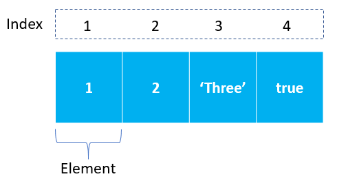

Arrays JavaScript
Exemplo neste tutorial, você aprenderá sobre matrizes JavaScript e suas operações básicas.
Introdução aos arrays JavaScript
Em JavaScript, um array é uma lista ordenada de valores. Cada valor é chamado de elemento especificado por um índice.

Uma Array JavaScript tem as seguintes características:
-
Primeiro, uma array pode conter valores de diferentes tipos. Por exemplo, você pode ter uma array que armazena o número e a string e os valores booleanos.
-
Em segundo lugar, o comprimento de uma array é dimensionado dinamicamente e tem crescimento automático. Em outras palavras, você não precisa especificar o tamanho da array antecipadamente.